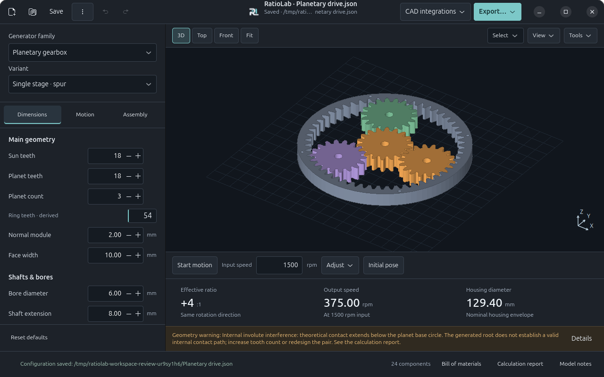

PARAMETRIC GEARS & REDUCERS / OPEN SOURCE
Open-source software for parametric gears and reducers.
Choose a model. Set the dimensions. Inspect it in 3D. Export your design.
In your browser. No installation.
Explore the workspace
The desktop workspace
Set dimensions and inspect the generated model alongside its parameters and results.
Choose a gear or reducer family, adjust its dimensions, then save the project or export geometry for CAD and 3D printing.
Read the user guideDownload RatioLab
Stable {{version}}Installers include the required dependencies. A compatible graphics driver is needed.
Windows Setup is unsigned. macOS packages use ad-hoc signing without notarization.
Requirements and installationChoose a desktop version
All desktop versions
Windows
Windows 11 · x64
macOS
macOS 15 or later
Linux
x64 · glibc 2.39+ · Ubuntu 24.04 build baseline
Models and tools
- Ten model families
- Spur, helical and double-helical gears; planetary, cycloidal, strain wave, worm, parallel-shaft and internal-gear reducers; bevel differentials.
- Inspection and analysis
- Animated 3D preview, component selection, sampled measurements, bills of materials and calculation reports. Finite parameter searches and discrete interference checks report their coverage and limits.
- Projects and export
- Save and reopen projects, undo edits and recover unsaved work. Export STEP, STL, SVG/DXF, reports or complete packages. SolidCraft, Autodesk Fusion and local MCP are optional integrations.
Geometry and ideal motion do not certify strength, service life or manufacturing readiness. Accuracy and limitations
Project and community
RatioLab is free software under GPL-3.0-only. Study or modify the source, report a problem, or discuss your project with the community.